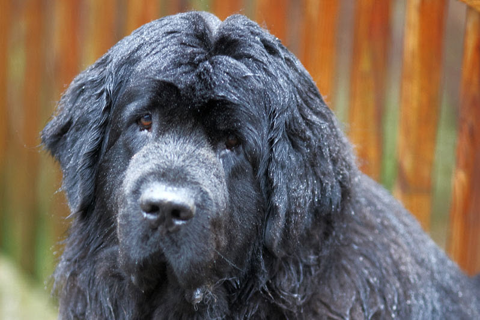

About the Newfoundland Dog
The Newfoundland dog is an extra-large breed with males weighing 143-176 lbs. and females weighing 121-143 lbs. Their coat colors can be black, gray, brown, or Landseer (white and black) in color.
Newfoundlands were originally bred as working dogs for fishermen in Newfoundland, Canada). They are known for their giant size, calm dispositions, strength, and loyalty. With their thick coat, webbed paws, and muscular build, it’s no surprise that Newfoundlands are at home in the water. They excel at swimming, water rescue training, and water games.
Newfoundland dogs make great family pets, but do require a lot of grooming and should be given space for outdoor activities.